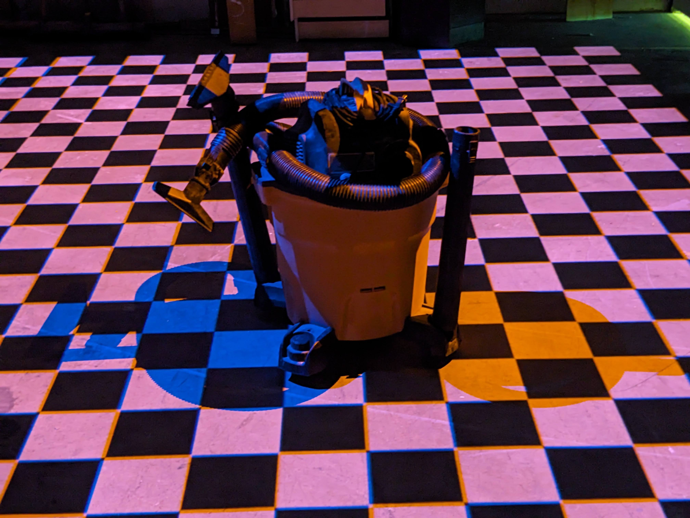
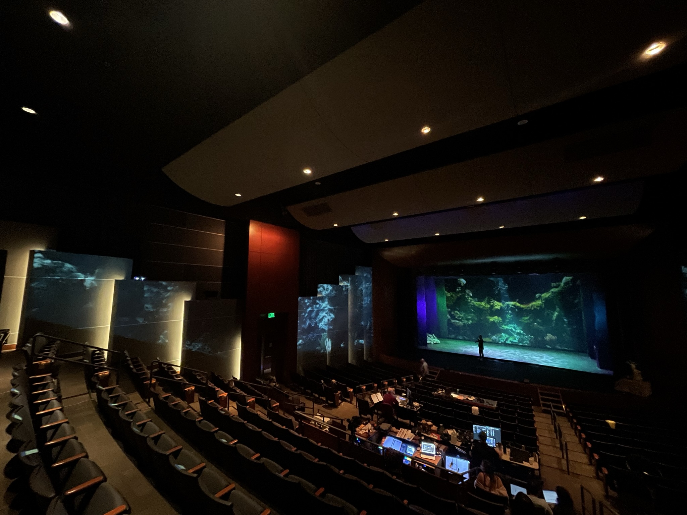
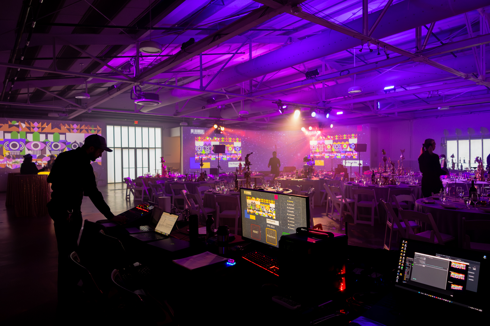
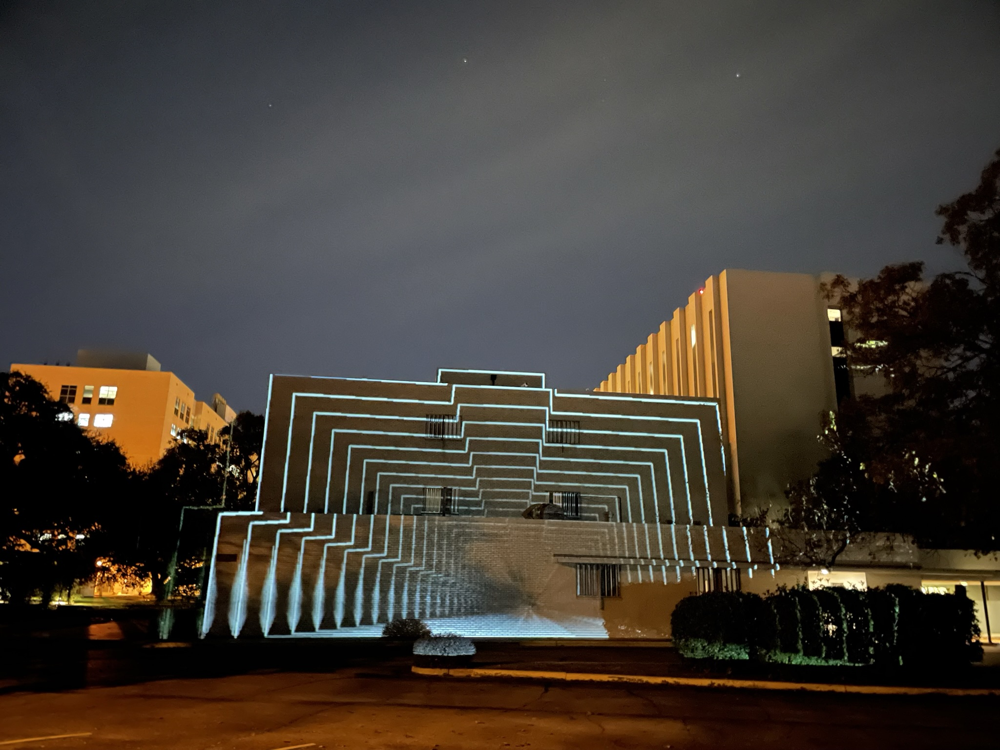

Transform any surface into a canvas for dynamic visual storytelling. Our audio-reactive projection art creates immersive environments that respond to sound and music in real-time.
Discuss Your ProjectOur Projection Mapping & Art services transform ordinary surfaces into extraordinary dynamic canvases. We create stunning visual narratives that can adapt to architecture, objects, and environments of any scale, bringing static surfaces to life through light and motion.
Specializing in both pre-rendered and real-time generative content, we develop projection experiences that can be audio-reactive, interactive, or programmed to evolve over time. Whether for brand activations, performances, installations, or architectural features, our projection mapping creates memorable, immersive visual experiences that captivate audiences.





We begin by surveying and scanning projection surfaces to create precise 3D models that serve as the foundation for perfect alignment and visual impact.
Our team develops custom visual content designed specifically for your projection surface, narrative goals, and audience experience.
We integrate projection systems with audio, sensors, or other interactive elements, programming the complete ecosystem to work in harmony.
Our specialists perform precise on-site setup and calibration, ensuring perfect alignment, color balance, and synchronization for maximum impact.

Music visualization for Austin City Limits that created an immersive visual environment responding to live music in real-time.
View Project
Building-scale projection mapping that transformed a static facade into a dynamic visual story for a public art festival.
View ProjectTurn any surface—no matter how ordinary—into an extraordinary visual experience without permanent modifications to the space.
Content can evolve throughout an event, respond to inputs, or change completely to create multiple experiences with a single setup.
Create unforgettable visual moments that generate strong emotional responses and lasting impressions on audiences.
From intimate indoor installations to massive architectural projections, our systems scale to fit spaces and budgets of any size.
While we can project onto almost any surface, optimal results come from light-colored, matte surfaces with interesting architectural features or shapes. Buildings with distinct architectural elements, textured walls, geometric objects, and custom-built structures all make excellent projection surfaces. That said, our advanced techniques allow us to work with challenging surfaces too—including dark materials, irregular shapes, and even transparent or reflective elements. During site assessment, we'll evaluate your space and recommend the most effective approach.
Projection brightness depends on several factors including ambient light, projection distance, surface reflectivity, and content design. For optimal visual impact, we typically recommend projections in controlled lighting environments or after sunset for outdoor applications. For daytime events, we can employ high-lumen projectors, strategic content design with high contrast, and environmental controls to create visible projections, though they typically won't have the same dramatic impact as evening presentations. We'll assess your specific conditions and recommend the best approach for your event timing and location.
Absolutely! Interactive and audio-reactive projection mapping are among our specialties. We can create projections that respond to music in real-time, analyzing audio signals to drive visual elements like color, movement, and intensity. For interactive installations, we can incorporate various input methods including motion sensors, touch screens, mobile devices, RFID technology, and custom interfaces to allow audience participation and control. These responsive systems create particularly engaging experiences that evolve based on human interaction or environmental factors.
Let's discuss how our projection mapping and visual art services can transform your space or event into an immersive visual experience.